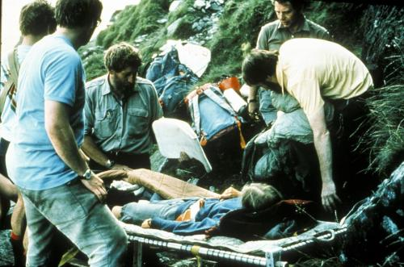
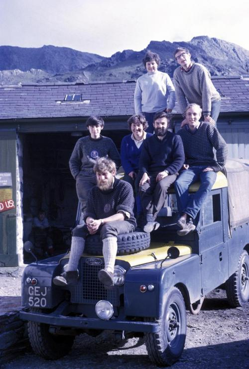

History
Beginnings
People have been scrambling over the hills for pleasure for centuries. The first recorded ascent of Snowdon was in 1639.
In 1778 Thomas Pennant was bagging summits. In 1854 George Borrow was exploring "Wild Wales". However, it was during the Victorian
era that a greater interest was taken in the mountains. Many mountaineering clubs were formed with regular "meets" at key locations
such as huts, guesthouses and hotels. The Gorphwysfa Hotel (now Pen y Pass Youth Hostel), the Pen y Gwryd Hotel and Ogwen Cottage
are but a few examples.

Self-Help Rescue
Traditionally, before the formation of Mountain Rescue Teams, those who ventured into the hills and mountains had to be able to
look after themselves out of necessity. The spirit of these people extended to helping other in distress in the same environment.
If a climber had an accident other members of their party would either evacaute the casualty or make it to the local hotel or pub
and gather together a group of climbers who would help rescue the unfortunate, even though they would have no specialist kit or
training. The earliest record of an organised search and recovery is in 1832 when a man was missing on Moel Siabod.
The Need for Change
After the Scafell Disaster of 1903 in which four climbers died, the Climbers Club decided that basic rescue equipment should be
held at some of these key locations. By 1905 stretchers were added to the caches. Between the World Wars, the mountaineering clubs
set up a "Stretcher Committee". One of their members was an engineer called Eustace Thomas. He and his company developed the first
purpose made mountain rescue stretcher - The Thomas Stretcher. The lack of analgesics was of great concern. In 1934 Dr Wilson Hey
of the Rucsack Club applied for a license to stock morphine at these Rescue Posts. He was refused so he continued to flout the law.
He was finally taken to Court in 1949 where he made an issue of the case. Shortly afterwards, the law was changed to grant a license
to the newly formed Mountain Rescue Committee. Limited stocks of morphine could now be stocked at these Mountain Rescue Posts with
additional stocks at the more busy Posts such as Ogwen Cottage.
Rescue in Snowdonia
Chris Briggs moved into the Pen y Gwryd Hotel in 1947 and soon became the focal character for Mountain Rescue. The Kings Hotel
in Capel Curig was converted into a centre for excellence for outdoor pursuits in 1954. Here, the trained staff of Plas y Brenin
as well as their students would assist in rescues. In 1959, Ron James, Trevor Jones and Tony Mason-Hornby bought Ogwen Cottage
from Mrs.Williams. They started a dedicated mountain training school. Mrs Williams' parting words of advice on rescue were "Fire
a red flare from the car park - get the climbers together and put the one with the cleanest boots in charge". Soon the instructors
found themselves on regular rescues and along with a few friends, The Ogwen Cottage Mountain Rescue Team was formed.
OVMRO is Born
Early in 1964 Ogwen Cottage was sold to Birmingham Education Authority. Ron James remained as Chief Instructor for another five
years. Now the staff had the pleasure of school holidays. It was during the Summer holidays of 1964 when one of the instructors,
John Glews, fell off a new route on Clogwyn Du. During his rescue by a hastily formed party, he soon realized that there was a need
for a dedicated Mountain Rescue Team. Thus OVMRO was conceived in the Autumn of that year. It was made up of the Ogwen Cottage Staff,
Mountaineering Club of North Wales, Bangor University Mountaineering Club and a few other regulars. The Inaugural Meeting was held
in March 1965.
Ogwen Cottage
During 1966 the team was based in a caravan behind Ogwen Cottage. Both OVMRO and Ogwen Cottage Outdoor Pursuits Centre began to
grow. Gradually, the staff were no longer the mainstay of the Rescue Team and Birmingham Education Authority needed more space.
The two organisations separated in 1975 with OVMRO leaving its home in the Ogwen Cottage generator shed to a temporary store in
Idwal Cottage. Meanwhile, representations were being made  to the National Trust to lease part of the old water bailiff's cottage
at Bryn Poeth. The cottage had been used as a one man mountaineering school run by Dudley Stevens in the 1960's and now the National
Trust were using it for their footpath building volunteers.
Bryn Poeth
During 1976, OVMRO moved into one small front room and a lean-to shed for the equipment store. After ten years of cramped
conditions in a building, which was deteriorating, the Committee proposed to the National Trust that OVMRO would extend and refurbish
the building. After a couple of years fund raising, the Team moved into a Police Bedford RL signals wagon parked adjacent to Bryn
Poeth and the builders moved on site just after Easter of 1988. The Team moved back at Christmas. The new Bryn Poeth was twice the
size and could now boast flush toilets, hot showers, two bunk rooms, a fully equipped kitchen and central heating. The building was
set out so that it could be shared with the National Trust volunteers who stay for working holidays.
Transport
By 1994, after a rescue when members shared the back of a farmer's Land Rover with his sheep, it was realised that there was a
need for a Team vehicle. Fund raising was organised and in February 1995 the 110 Land Rover was delivered. Having a vehicle meant
we needed a garage at Bryn Poeth, so fund raising started again and in the Autumn of 1996 work started. Whilst building the garage,
the first floor of Bryn Poeth was converted into a training/lecture room. This was all completed in April 1997.
Casualty Care
OVMRO has continually tried to improve mountain rescue with innovation, new equipment and training. Dr. Iuean Jones, the Casualty
Officer at the C&A Hospital in Bangor and Team member set up First Aid Training specifically for mountain rescue in the late 1960's.
His course was soon recognised by civilian and RAF mountain rescue teams throughout the UK. In 1967 a RAF helicopter was used for
mountain rescue for the first time. In the late 1980's Members of the team designed and built The Ogwen Stretcher. They also devised
the "autolocks", a system of controlling the lowering of the stretcher by the jockeys on the cliff face. In 1994 a scheme was set up
to appoint Team Leaders on merit measured against specific abilities and qualities. This avoided the popular vote. In 1998 the Team
held an external audit carried out by members of other MRT's. This "no holds barred" meant that we could get a true measure of the
Organisation as seen by other MRT's.
Memorable Incidents
Throughout the history of the Organisation, there have been some memorable incidents. The Team has been involved in some large
mountain searches, which have resulted in national publicity. Sometimes these multi-day searches have resulted in the recovery of
a body but in 1973, four Duke of Edinburgh boys were found after four days of searching by 500 people. In 1988 members of the Team
assisted the Police in a very large search for a little girl who had been abducted on the Welsh Borders. Later that year the Team
was called to rescue three canoeists from the raging torrents of the Conwy Falls. This was captured on film and broadcast to the
nation. A decade later this rescue was re-enacted for the BBC 999 programme. 1988 closed with members assisting at the Lockerbie
disaster. In 1996 OVMRO was assisted by neighboring MRT's in a four casualty Winter rescue. This required over fifty people to carry
the stretchers down the icy slopes of the Carneddau Mountains.
Film and TV
OVMRO has been involved with films and TV since soon after its conception. Recently, it appeared in a full-length fly on the
wall documentary for the BBC and in Songs of Praise. It has also appeared in Hearts of Gold and Dr. Tony Jones was the star of
"This is your Life".
Royal Connections
The Organisation has attracted the attentions of Prince Charles who visited the original Bryn Poeth in 1976 and the Secretary
of State for Wales, William Hague in 1997.
Sponsorship
In 1999 the Team became involved in a very successful promotion of Welsh Mountain Lamb through Bennetts and Safeways. This
promotion resulted in the new purpose built 130 Land Rover being presented to OVMRO in February 2001.
The Team Today
OVMRO continues to be one of the busiest Mountain Rescue Teams in the country assisting the Police and Ambulance authorities
with rough terrain search and rescue in Northern Snowdonia. Its members are on stand-by 24 hours a day, 365 days of the
year; giving their time for free to assist fellow users of the great outdoors who have come to grief.